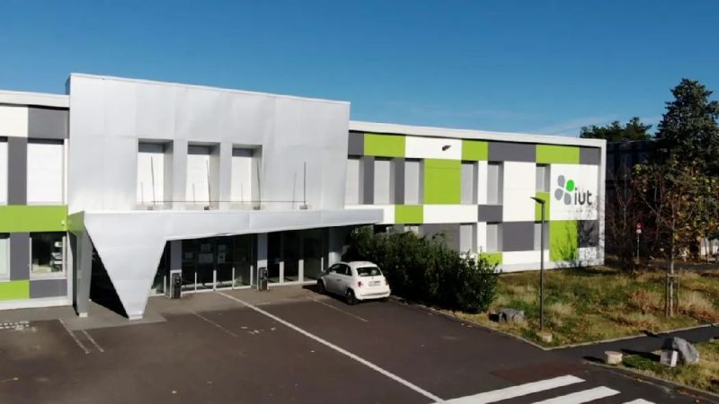
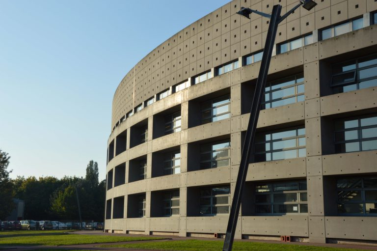
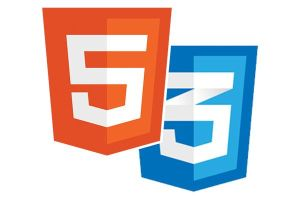
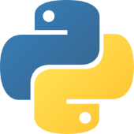
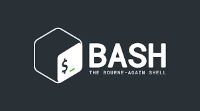
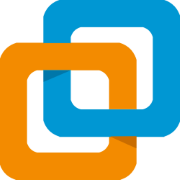
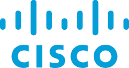
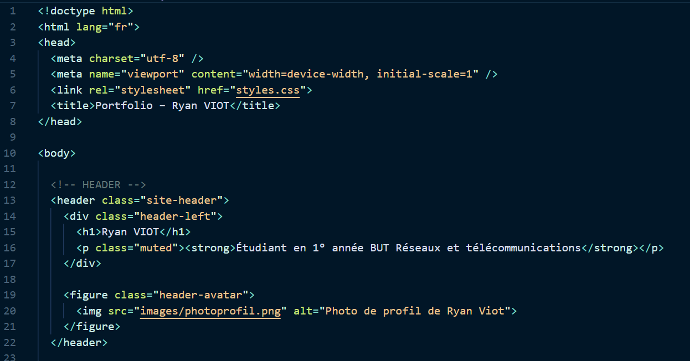
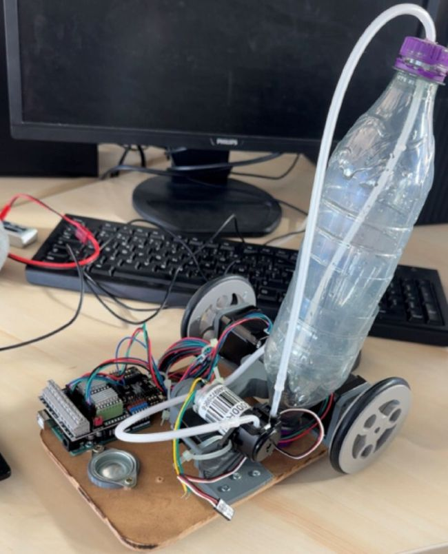
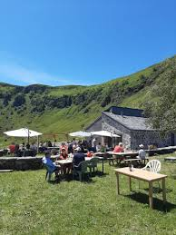

À propos de moi
Viot Ryan étudiant en 1° année BUT Réseaux et télécommunications à l'IUT Aubière.
Durant mes années de lycée, j'ai réalisé plusieurs projets qui m'ont amené à m'intéresser davantage à cette formation, en plus de l'intérêt que j'avais déjà pour ce domaine. Par exemple, la conception d'un éco-gîte, notamment du point de vue de la sécurité. Cela m'a permis de découvrir certains aspects liés aux réseaux. Ces expériences m'ont donné envie de m'orienter vers le BUT Réseaux et Télécommunications.
Actuellement, je souhaite mettre mes compétences, mon sérieux ainsi que mes qualités de persévérance, de travail d'équipe et de curiosité au service d'une équipe. Je suis à la recherche d'un stage à partir d'avril 2027 afin de mettre en pratique les connaissances acquises au cours de ma formation.
Formations
-
BUT Réseaux et Télécommunications — IUT Aubière
Objectif de la formation :
Former des techniciens capables de concevoir, installer, administrer et sécuriser des réseaux informatiques et télécoms.Pourquoi cette formation :
Cette formation correspond à mon intérêt pour les réseaux, les nouvelles technologies et le travail concret sur des infrastructures réelles. -
Baccalauréat STI2D – Option SIN — Lycée Lafayette Clermont Ferrand (63)
Terminal :
Baccalauréat sciences et technologies de l'industrie et du développement durable.Option Systèmes d'Information et Numérique
Mention Assez Bien
Première :
Baccalauréat sciences et technologies de l'industrie et du développement durable.Option Innovation Technologique
Compétences
Techniques & humaines
Compétences techniques
-
HTML / CSS
Création de sites web, manipulation HTML et CSS.
 -
Python
Développement de scripts, projets de calcul et automatisation.
 -
Télécommunications (Oscilloscope, Fibre Optique...)
Mesures de signaux avec oscilloscope, connaissance des câbles et raccordements fibre optique, analyse et tests de transmission.
-
Système (Linux,Windows,Virtualisation)
OS (Linux,Windows) : Mise en place et gestion des environnements Windows et Linux, incluant le contrôle des comptes utilisateurs et des droits d'accès.
Script Bash : Création et exécution de scripts Bash pour automatiser et simplifier les tâches.
Virtualisation : Installation, configuration et gestion de machines virtuelles pour simuler et tester des environnements réseau.
 -
Réseaux (Plan d'adressage IP, Configuration Point d'accès)
Élaboration de plans d'adressage IP, configuration et test de points d'accès Wi-Fi, compréhension des VLAN et routage de base.

Compétences humaines & langues
-
Travail en équipe
Ayant pratiqué une expérience professionnel dans la restauration, cela m'a appris à collaborer, communiquer et atteindre des objectifs collectifs.
-
Persévérance
Le football m'a appris à rester discipliné et régulier pour progresser et atteindre mes objectifs.
-
Curiosité
Mon intérêt pour les technologies reflète une volonté constante d'apprendre et de comprendre les nouveautés.
-
Langue
Anglais : Capable de comprendre et d'échanger dans des situations professionnelles simples, lire des documents courts et rédiger des messages clairs..
Projets
-
Portfolio
Contexte : Dans le cadre de la SAÉ 1.04 du BUT Réseaux et Télécommunications, j'ai réalisé un portfolio.
Objectif : L'objectif de ce projet est de concevoir un portfolio structuré et clair afin de valoriser mes compétences et mes réalisations. Il permet notamment de mettre en avant mes compétences en HTML et CSS, à travers la conception et la mise en forme d'un site web personnalisé. Ce portfolio constitue également un outil de présentation professionnelle dans le cadre de ma recherche de stage en BUT 2.
Travail réalisé : Pour réaliser ce projet, j'ai défini la structure générale du portfolio en organisant les différentes rubriques telles que la présentation personnelle, les projets réalisés et les compétences techniques. Le développement des pages a été réalisé en HTML et la mise en forme en CSS, en s'appuyant à la fois sur les cours de développement web déjà reçus et sur des ressources complémentaires, notamment le site W3Schools, afin d'approfondir certains aspects techniques.

Résultat : Ce projet m'a permis de mieux comprendre et appréhender le HTML et le CSS, tout en renforçant mes compétences en structuration et mise en forme d'un site web. Il m'a également aidé à préparer un support concret pour ma recherche de stage en BUT 2.
-
Création Robot Traçeur lignes terrain de rugby
Contexte : En projet de fin d'année de terminal par groupe de 4 nous avons réalisés le robot suivant.
Objectif : L'objectif était de concevoir une maquette de robot capable, en toute autonomie, de tracer les lignes d'un terrain de rugby.
Travail réalisé : Deux personnes étaient chargées de réaliser l'élaboration du châssis et de s'occuper de la disposition des différents éléments sur celui-ci, tandis que mon camarade et moi nous sommes occupés de la gestion du déplacement du robot sur le terrain et du traçage de la peinture.

Résultat : Le cahier des charges a donc été rempli, nous avons répondu à toutes les contraintes imposées, les professeurs ont été largement satisfaits du travail et nous avons obtenu la note de 18/20.
Expérience
-
Serveur Auberge des marmottes - Lavigerie - (15)

Contexte : Job étudiant en été en tant que serveur dans une auberge.
Travail réalisé : Accueil des clients, prise de commandes, service des repas et boissons.
Résultat : Service fluide et rapide, reconnaissance du chef d'entreprise pour le sérieux et l'efficacité au poste, et cette expérience m'a permis d'apprendre à travailler en équipe.